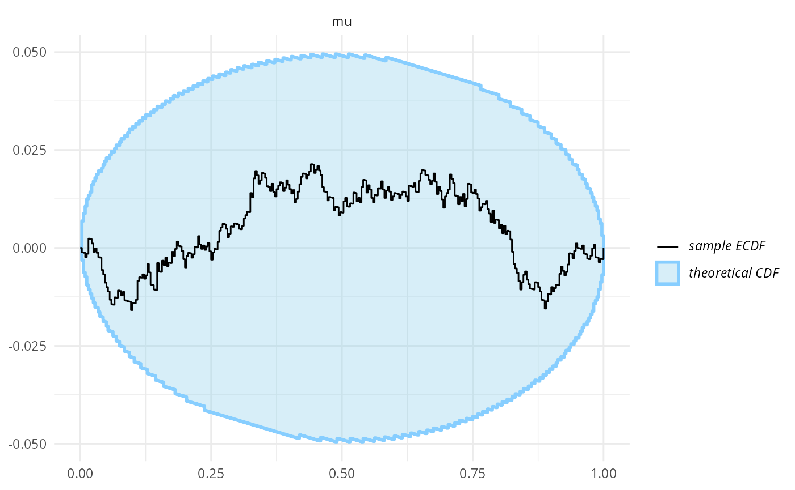
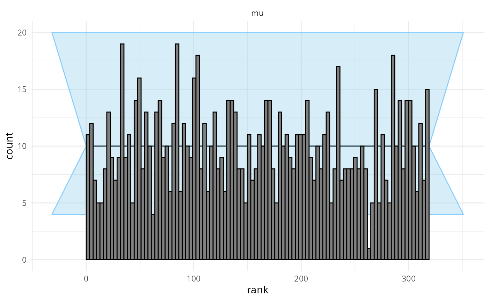
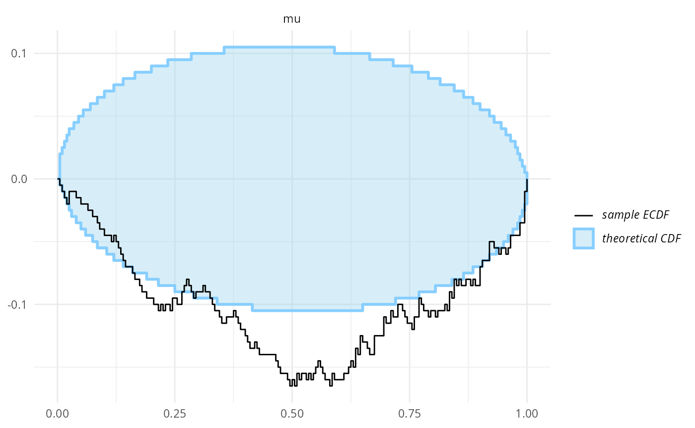
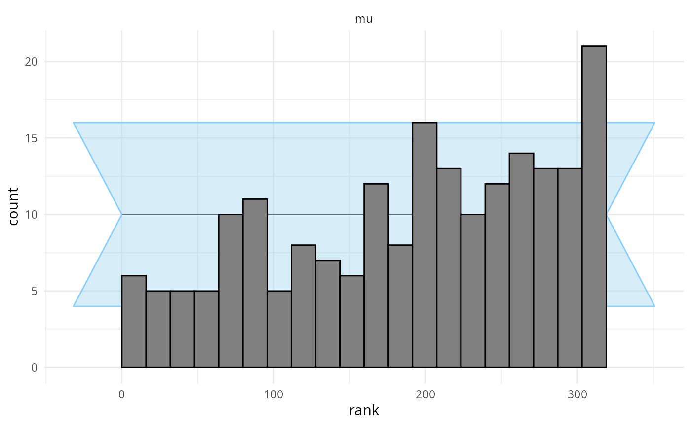
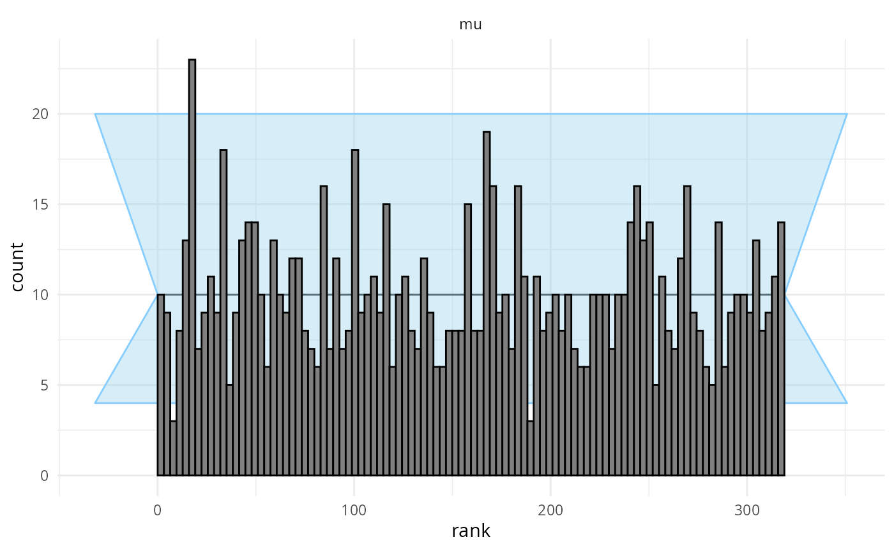
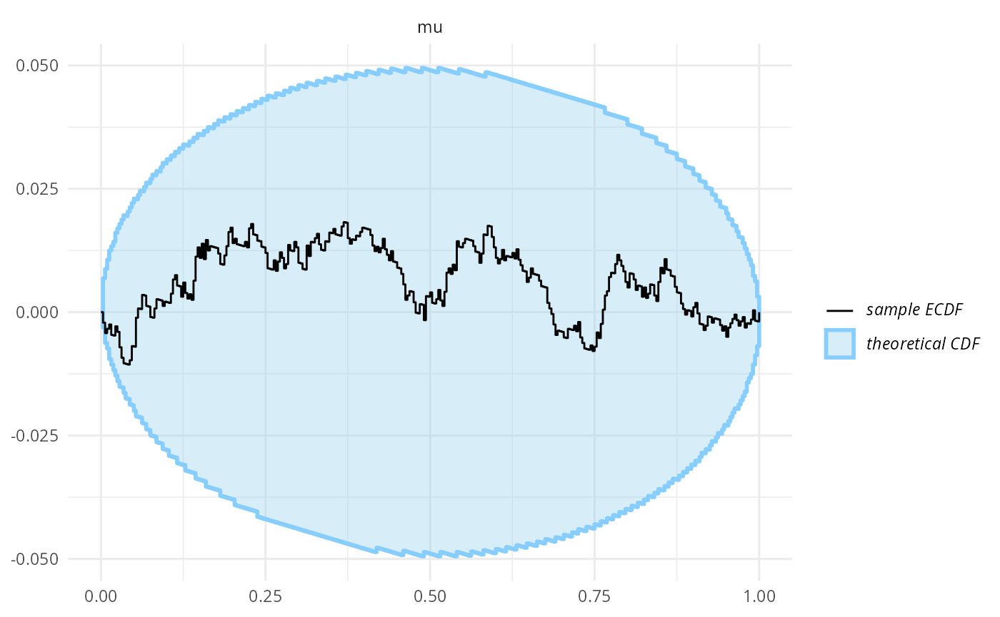

vignettes/rejection_sampling.Rmd
rejection_sampling.RmdIn some cases, one may want to exclude extreme simulations from SBC (e.g. because those simulations create divergences). It is best to use prior predictive checks to examine your priors and change them to avoid extremes in the simulated data. In some cases, this may however be impractical/impossible to do via prior choice - one example are regression coefficients, where once we have many predictors, any independent prior that is not very strict will lead to unrealistic predictions. Joint priors are needed in such case, but those are not well understood and easy to use. See Paul Bürkner’s talk on SBC StanConnect for more context.
An alternative is to use rejection sampling i.e. we repeatedly generate a simulation and only accept it when it passes a certain condition we impose (e.g. that no observed count is larger than \(10^8\)). But does rejection sampling when generating simulations affect the validity of SBC?
Thanks to forum user Niko Huurre who derived the necessary math at Stan Discourse discussion of the topic we know exactly when it is OK. Briefly: for algorithms that only need to know the posterior density up to a constant (which includes Stan and many others), it is OK as long as the rejection criterion only uses observed data and not the unobserved variables.
We’ll first walk through the math and then show examples of both OK and problematic rejection sampling.
Let \(f\left(y\right)\) be the probability that the simulated data \(y\) is rejected (usually a 0-1 function if you have a clear idea what a “bad” dataset looks like, but could be probabilistic if you’re relying on finicky diagnostics). The important numbers are the probability of rejection for variable \(\theta\)
\[ L\left(\theta\right)=\int f\left(y\right)\pi\left(y|\theta\right)\mathrm{d}y \]
and the total rate of rejections from the prior
\[ R=\iint f\left(y\right)\pi\left(y|\theta\right)\pi\left(\theta\right)\mathrm{d}y\mathrm{d}\theta=\int L\left(\theta\right)\pi\left(\theta\right)\mathrm{d}\theta \]
Rejecting the simulation when it generates “bad” data effectively distorts the prior
\[ \pi\left(\theta\right)\to\frac{L\left(\theta\right)}{R}\pi\left(\theta\right) \]
and of course rejections change the generating distribution
\[ \pi\left(y|\theta\right)\to\frac{f\left(y\right)}{L\left(\theta\right)}\pi\left(y|\theta\right) \]
but crucially these changes cancel out when computing the posterior. Before rejections we have:
\[ \pi(\theta | y) \propto \pi(y | \theta) \pi(\theta) \]
After rejections we have
\[ \pi(\theta | y) \propto \frac{L(\theta)}{R} \pi(y | \theta) \frac{f(y)}{L(\theta)} \pi(\theta) = \frac{f(y)}{R} \pi(y | \theta) \pi(\theta) \]
And since \(\frac{f(y)}{R}\) is a constant for any given simulation (and hence the fit), the overall posterior for Stan (and most other MCMC algorithms) is the same, because Stan only needs the posterior density up to a constant. So whether we take rejection into account or not, the model will match the generating process. However, if \(f\) also depended on \(\theta\), it would no longer contribute a constant and we’ll get a mismatch between the generator and model.
So let’s see if that also happens in practice. Let’s setup our environment:
library(SBC)
use_cmdstanr <- getOption("SBC.vignettes_cmdstanr", TRUE) # Set to false to use rstan instead
if(use_cmdstanr) {
library(cmdstanr)
} else {
library(rstan)
rstan_options(auto_write = TRUE)
}
library(bayesplot)
library(posterior)
library(future)
plan(multisession)
options(SBC.min_chunk_size = 10)
# Setup caching of results
if(use_cmdstanr) {
cache_dir <- "./_rejection_sampling_SBC_cache"
} else {
cache_dir <- "./_rejection_sampling_rstan_SBC_cache"
}
if(!dir.exists(cache_dir)) {
dir.create(cache_dir)
}We’ll use a very simple model throughout this vignette:
data {
int<lower=0> N;
real y[N];
}
parameters {
real mu;
}
model {
mu ~ normal(0, 2);
y ~ normal(mu, 1);
}
if(use_cmdstanr) {
backend <- SBC_backend_cmdstan_sample(cmdstan_model("stan/rejection_sampling.stan"), iter_warmup = 800, iter_sampling = 800)
} else {
backend <- SBC_backend_rstan_sample(stan_model("stan/rejection_sampling.stan"), iter = 1600, warmup = 800)
}First, we’ll use a generator that matches the model exactly.
N <- 10
generator <- SBC_generator_function(function() {
mu <- rnorm(1, 0, 2)
list(
variables = list(mu = mu),
generated = list(N = N, y = rnorm(N, mu, 1))
)
})So we expect the SBC to pass even with a large number of fits.
set.seed(2323455)
datasets <- generate_datasets(generator, 1000)
results <- compute_SBC(datasets, backend, keep_fits = FALSE,
cache_mode = "results",
cache_location = file.path(cache_dir, "no_rejections"))## Results loaded from cache file 'no_rejections'## - 1 (0%) fits had at least one Rhat > 1.01. Largest Rhat was 1.011.## Not all diagnostics are OK.
## You can learn more by inspecting $default_diagnostics, $backend_diagnostics
## and/or investigating $outputs/$messages/$warnings for detailed output from the backend.
plot_ecdf_diff(results)
plot_rank_hist(results)
Indeed, all looks good.
Now let us modify the generator to reject based on values of an unobserved variable.
generator_reject_unobserved <- SBC_generator_function(function() {
repeat {
mu <- rnorm(1, 0, 2)
if(mu > 3) {
break
}
}
list(
variables = list(mu = mu),
generated = list(N = N, y = rnorm(N, mu, 1))
)
})We don’t even need to run very many fits to see the problem.
set.seed(21455)
datasets_reject_unobserved <- generate_datasets(generator_reject_unobserved, 200)
results_reject_unobserved <- compute_SBC(datasets_reject_unobserved, backend, keep_fits = FALSE,
cache_mode = "results",
cache_location = file.path(cache_dir, "reject_unobserved"))## Results loaded from cache file 'reject_unobserved'
plot_ecdf_diff(results_reject_unobserved)
plot_rank_hist(results_reject_unobserved)
Indeed, we see a clear failure.
But what if we reject based on the values of data? This should in theory result in just a constant change in posterior density and not affect SBC. (SBC will however then check only the non-rejected parts of the data space). We will do a relatively aggressive rejection scheme (reject more than 50% of simulations).
generator_reject_y <- SBC_generator_function(function() {
repeat {
mu <- rnorm(1, 0, 2)
y <- rnorm(N, mu, 1)
if(mean(y) > 5) {
break
}
}
list(
variables = list(mu = mu),
generated = list(N = N, y = y)
)
})
set.seed(369654)
datasets_reject_y <- generate_datasets(generator_reject_y, 1000)
results_reject_y <- compute_SBC(datasets_reject_y, backend, keep_fits = FALSE,
cache_mode = "results",
cache_location = file.path(cache_dir, "reject_y"))## Results loaded from cache file 'reject_y'## - 1 (0%) fits had at least one Rhat > 1.01. Largest Rhat was 1.01.## Not all diagnostics are OK.
## You can learn more by inspecting $default_diagnostics, $backend_diagnostics
## and/or investigating $outputs/$messages/$warnings for detailed output from the backend.
plot_rank_hist(results_reject_y)
plot_ecdf_diff(results_reject_y)
We see that even with quite heavy rejection based on y, SBC to a high resolution passes.
If our priors can sometimes result in simulated data that is unrealistic, but we are unable to specify a better prior directly (e.g. because we would need to define some sort of joint prior), we can use rejection sampling to prune unrealistic simulations as long as we only filter by the observed data and don’t directly use any unobserved variable values. Notably, filtering based on divergences or other fitting issues is also just a function of data and thus permissible. The resulting SBC will however provide guarantees only for data that would not be rejected by the same criteria.